MGT 409 · Homework 4 · Problem 11
Campus Customs: App Check
Tested on the live site (frontend at localhost:5173, FastAPI backend at localhost:8000)
on October 24, 2026, as a guest and as the seeded test user. Screenshots are in
app_check_images/. All shopper details shown are test data, and no passwords or API keys appear.
Required checks
1. Chat checks an item's inventory PASS
As a guest on the Saybrook College Crewneck page, I asked Handsome Dan: "Is the Saybrook College Crewneck in stock in large? How much is it?"
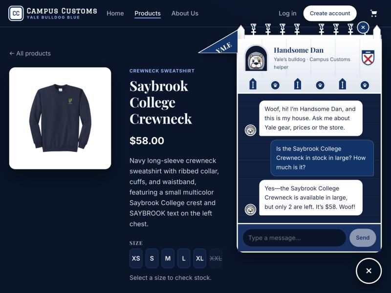
Proof it's honest: in campus_customs.db, the inventory table has
quantity = 2 for this crewneck in size L, and the catalogue table has
price = 58.0. The chat's stock and price match the database exactly, because the agent got them from its
check_stock tool, not from memory. The size row on the page also shows XXL crossed out, which matches its
quantity = 0.
2. Dynamic product cards after a category question PASS BUG FIXED
In the chat, I asked: "What hoodies do you have?"
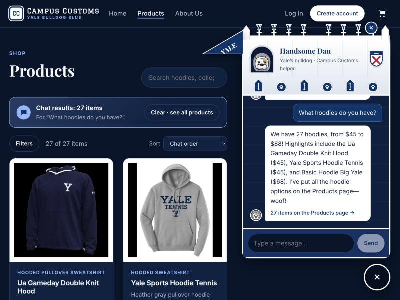
What this proves: the agent searched the catalogue, returned structured product IDs with
show_on_page: true, and the front end rendered them as the same cards used everywhere else. 27 is the true
number of hoodies in campus_customs.db. Each card still opens its product page (Problem 3 behavior).
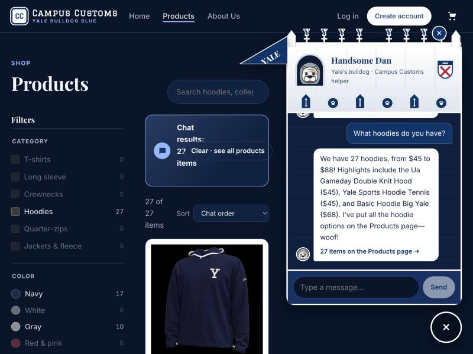
Bug found and fixed: on a laptop-width screen (about 1024px) with the chat open, the filter sidebar and the
chat panel left too little room. The banner's text wrapped one word per line, and its Clear button overlapped it
(screenshot above). Fix in frontend/src/index.css: at widths of 861–1279px, while the chat is open, the filters
collapse into the Filters button (the same panel used on phones), and the banner wraps cleanly. Retested:
no overlap, and the Filters button opens and closes the panel.
3. Problem 9 feature: the demo store PASS
On Basic Hoodie Big Yale, I picked size M and quantity 2, added it to the cart, opened the cart, and checked out as "Demo Shopper" with an example.com email and in-store pickup.
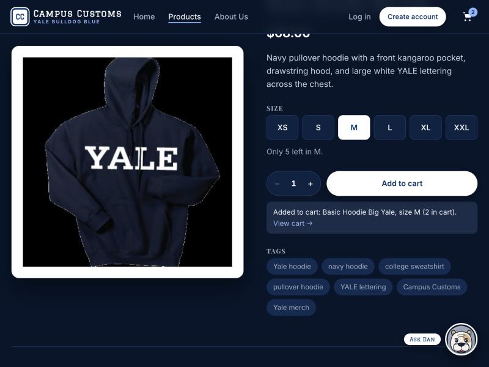
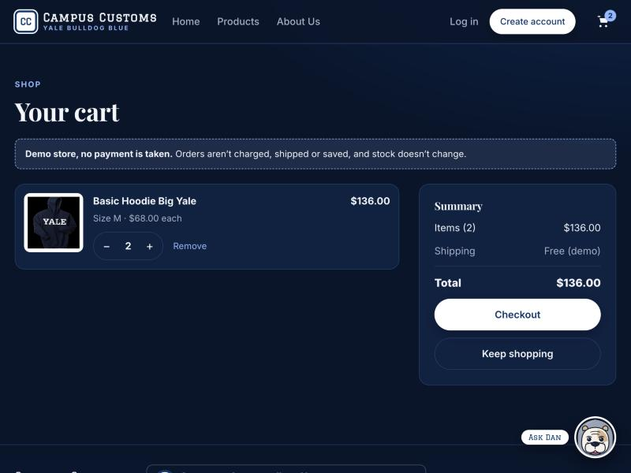
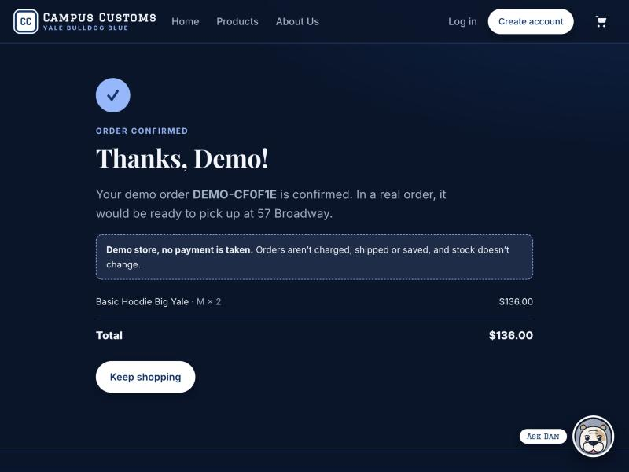
What this proves: the full buying flow works from product to confirmation, the checkout page has no card
fields, and no payment is taken. I checked the database before and after: total stock stayed at 5,920
units, and this hoodie still has 5 in M. So the demo order really doesn't change inventory.
Extra checks
4. Typo-tolerant search PASS
In the chat, I asked with a misspelling: "do you have any saybrok stuff?"
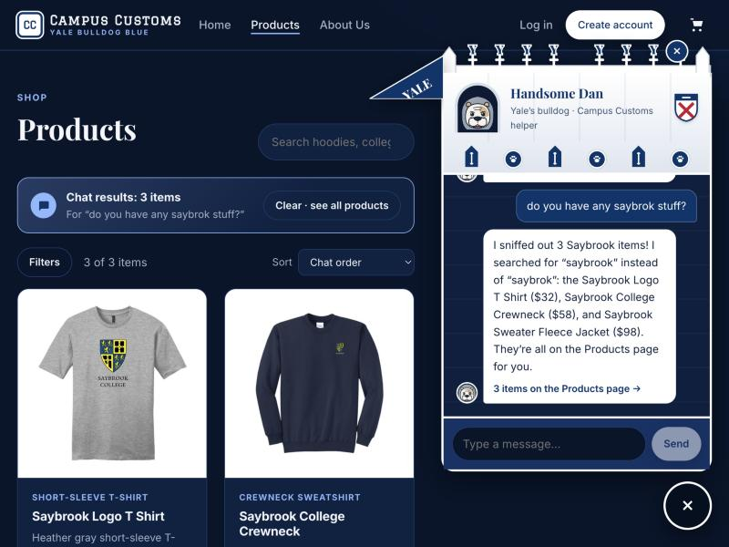
What this proves: the search tool corrected the typo, the agent told the shopper what it searched for instead of silently changing it, and the results (T-shirt $32, crewneck $58, fleece jacket $98) are the real Saybrook items and prices.
5. Login with saved chat history PASS
I logged in as the seeded test user (I didn't screenshot the login form, so no password appears) and opened the chat.
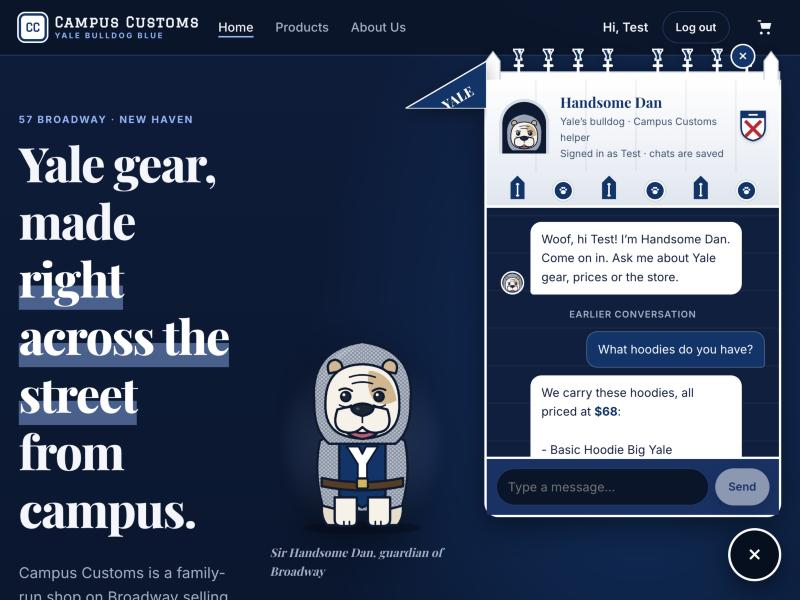
What this proves: logged-in shoppers' chats are stored in the chat_messages table and
reloaded when they return, and the agent knows who it's talking to. Logging out cleared the chat window back to a guest
greeting.
6. Custom order form PASS
While logged in as the test user, I opened Request a custom order, filled in the remaining fields, and submitted.
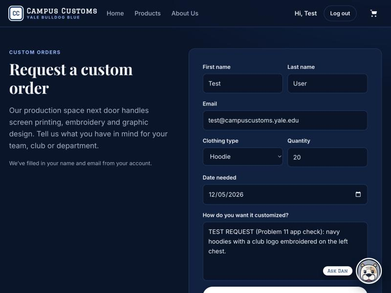
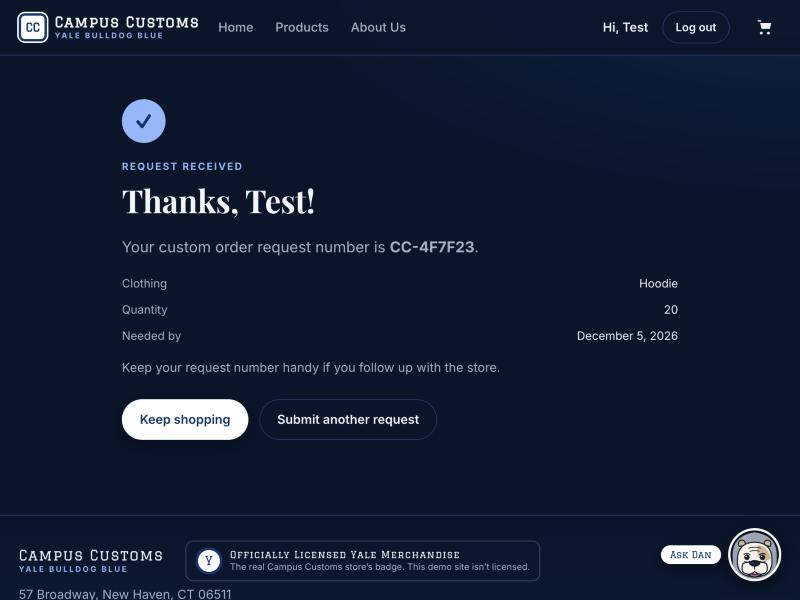
What this proves: the request was saved. The new custom_requests table has the row
CC-4F7F23 | user_id 1 | Test | User | Hoodie | 20 | 2026-12-05 | new, linked to the logged-in user. It's labeled
"TEST REQUEST (Problem 11 app check)" in its customization text.
7. The site on a phone screen PASS
I viewed the site at phone width (375 × 812) and checked every page for sideways scrolling.
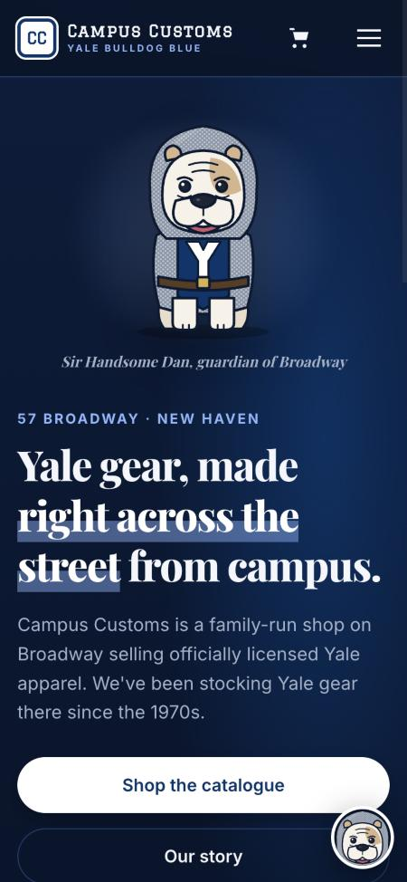
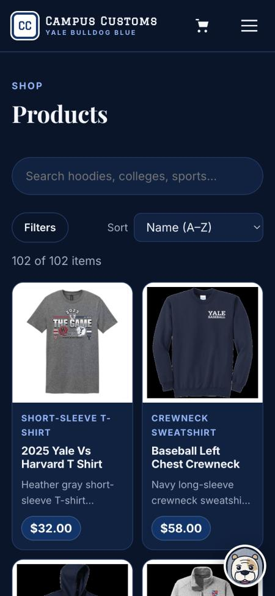
What this proves: the layout adapts to phones. The page was exactly 375px wide (no sideways scrolling) on Home, Products, a product page, About, Log in, Cart, Custom order, and a collection page.
Notes
- One bug was found and fixed (check 2). The other checks passed on the first try.
-
Testing created a little real data, as expected for a live-site test: custom request
CC-4F7F23incustom_requests. The demo order changed nothing in the database. The guest chats in checks 1, 2, and 4 aren't saved, because only logged-in chats are. - Screenshots were taken with page animations paused so each one shows the settled page. In a normal browser, cards and pages fade in over about a third of a second.